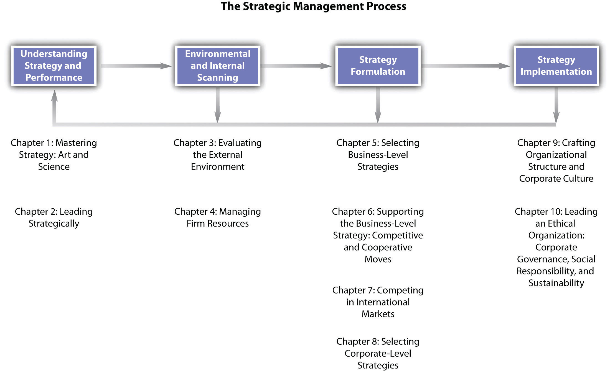

Strategic management is a process that involves building a careful understanding of how the world is changing, as well as a knowledge of how those changes might affect a particular firm. CEOs, such as late Apple-founder Steve Jobs, must be able to carefully manage the possible actions that their firms might take to deal with changes that occur in their environment. We present a model of the strategic management process in Figure 1.7 "Overall Model of the Strategic Management Process". This model also guides our presentation of the chapters contained in this book.
Figure 1.7 Overall Model of the Strategic Management Process
The strategic management process begins with an understanding of strategy and performance. As we have noted in this introductory chapter, strategic management is both an art and a science, and it involves multiple conceptualizations of the notion of strategy drawn from recent and ancient history. In Chapter 2 "Leading Strategically", we focus on how leading strategically is needed if the firm is to achieve the long-term strong performance companies such as Apple have attained. Consequently, how managers understand and interpret the performance of their firms is often central to understanding strategy.
Environmental and internal scanning is the next stage in the process. Managers must constantly scan the external environment for trends and events that affect the overall economy, and they must monitor changes in the particular industry in which the firm operates. For example, Apple’s decision to create the iPhone demonstrates its ability to interpret that traditional industry boundaries that distinguished the cellular phone industry and the computer industry were beginning to blur. At the same time, firms must evaluate their own resources to understand how they might react to changes in the environment. For example, intellectual property is a vital resource for Apple. Between 2008 and 2010, Apple filed more than 350 cases with the US Patent and Trademark Office to protect its use of such terms as apple, pod, and safari.Apple Inc. litigation. Wikipedia. Retrieved from en.wikipedia.org/wiki/Apple_Inc._ litigation
A classic management tool that incorporates the idea of scanning elements both external and internal to the firm is SWOT (strengths, weaknesses, opportunities, and threats) analysis. Strengths and weaknesses are assessed by examining the firm’s resources, while opportunities and threats refer to external events and trends. The value of SWOT analysis parallels ideas from classic military strategists such as Sun Tzu, who noted the value of knowing yourself as well as your opponent. Chapter 3 "Evaluating the External Environment" examines the topic of evaluating the external environment in detail, and Chapter 4 "Managing Firm Resources" presents concepts and tools for managing firm resources.
The importance of knowing yourself and your opponent is applicable to the knowledge of strategic management for business, military strategy, and classic strategy games such as chess.
Strategy formulation is the next step in the strategic management process. This involves developing specific strategies and actions. Certainly, part of Apple’s success is due to the unique products it offers the market, as well as how these products complement one another. A customer can buy an iPod that plays music from iTunes—all of which can be stored in Apple’s Mac computer.Inside CRM Editors. Effective strategies Apple uses to create loyal customers [Online article]. Retrieved from http://www.insidecrm.com/features/strategies-apple-loyal -customers In Chapter 5 "Selecting Business-Level Strategies", we discuss how selecting business-level strategies helps to provide firms with a recipe that can be followed that will increase the likelihood that their strategies will be successful. In Chapter 6 "Supporting the Business-Level Strategy: Competitive and Cooperative Moves", we present insights on how firms can support the business-level strategy through competitive and cooperative moves. Chapter 7 "Competing in International Markets" presents possibilities for firms competing in international markets, and Chapter 8 "Selecting Corporate-Level Strategies" focuses on selecting corporate-level strategies.
Strategy implementation is the final stage of the process. One important element of strategy implementation entails crafting an effective organizational structure and corporate culture. For example, part of Apple’s success is due to its consistent focus on innovation and creativity that Steve Jobs described as similar to that of a start-up. Chapter 9 "Executing Strategy through Organizational Design" offers ideas on how to manage these elements of implementation. The final chapter explores how to lead an ethical organization through corporate governance, social responsibility, and sustainability.